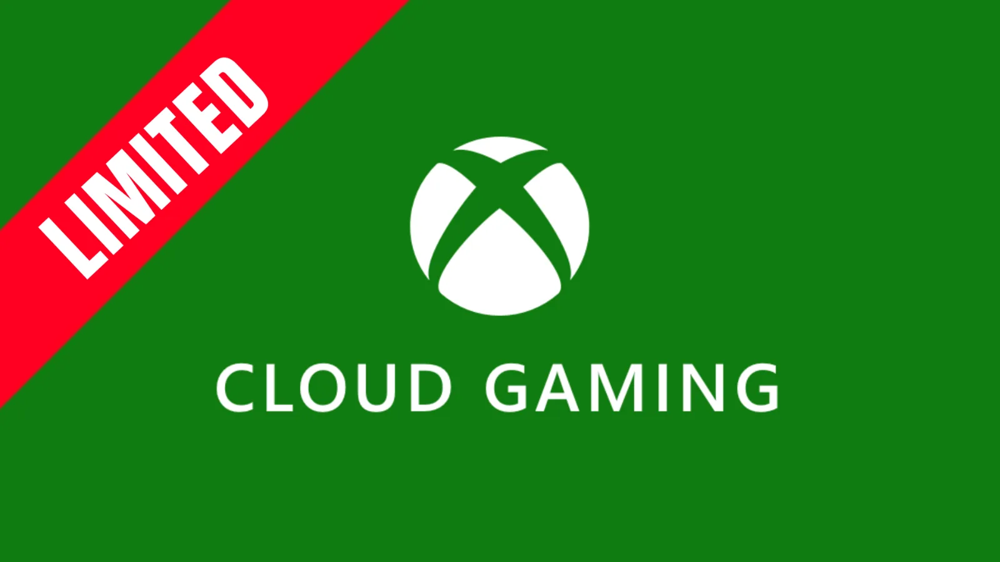

Luiso · 4 de septiembre de 2026 · 2 min de lectura
Microsoft confirmó que a partir de noviembre de 2026 el acceso al juego en la nube incluido en Xbox Game Pass dejará de ser ilimitado bajo el modelo actual.
Cada nivel de suscripción tendrá una cantidad específica de horas disponibles por mes.
El nuevo reparto será:
Una vez utilizadas esas horas, los usuarios podrán adquirir tiempo adicional para continuar jugando mediante la nube.
La compañía explicó que el cambio responde al crecimiento del uso de Xbox Cloud Gaming y al aumento de los costos asociados a mantener la infraestructura necesaria para ofrecer el servicio.
Microsoft busca, de esta manera, establecer una cantidad de uso incluida en cada suscripción y separar ese consumo adicional del precio habitual de Game Pass.
La decisión afecta especialmente a quienes utilizan el juego en la nube como su principal forma de acceder a los títulos de Xbox.
El cambio se refiere específicamente al juego mediante la nube.
Por lo tanto, quienes descarguen los juegos y los ejecuten localmente en una consola o PC no están consumiendo esas horas de Cloud Gaming.
La modificación adquiere mayor importancia para quienes utilizan teléfonos, tablets, televisores compatibles u otros dispositivos como plataforma principal para jugar mediante streaming.
El usuario no perderá inmediatamente el acceso al servicio. Microsoft permitirá comprar horas adicionales después de consumir el límite incluido en el plan.
La compañía todavía debe detallar completamente cómo funcionará la compra de tiempo adicional y cuál será su precio en cada región.
El juego en la nube fue presentado durante años como una de las posibilidades más atractivas del ecosistema Xbox: tener acceso a los juegos sin necesidad de descargarlos ni disponer de hardware potente.
Ahora Microsoft está introduciendo un modelo mucho más controlado.
El impacto será particularmente visible entre quienes utilizan Game Pass principalmente para jugar desde la nube y no desde una consola o PC.
Para ellos, las 15 horas mensuales de Ultimate pueden convertirse en un límite relevante, especialmente con juegos extensos que requieren decenas de horas para completarse.
La pregunta será ¿vale la pena pagar el servicio, incluso en su versión Ultimate, si sólo se usa en su modalidad "en la nube"?
15 horas por mes no es suficiente, por lo que parece más rentable comprar la versión más básica y pagar por hora. Pero la verdad es que es una noticia que baja bastante las expectativas de aquellos que no tienen una PC o consola adecuada para jugar en su casa.